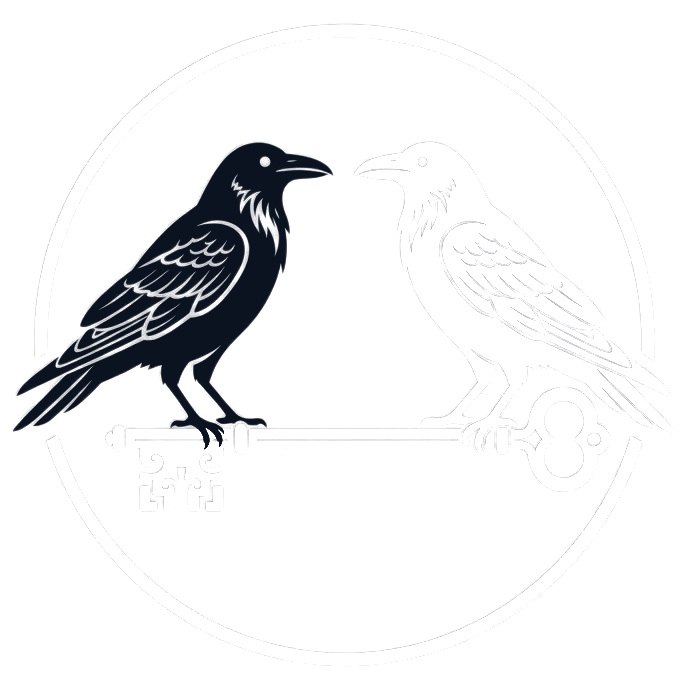
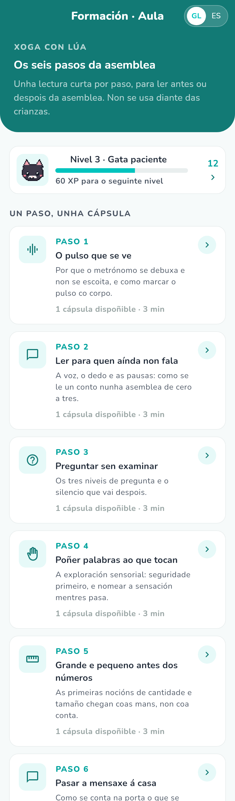
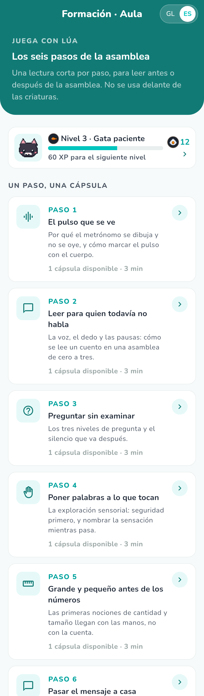
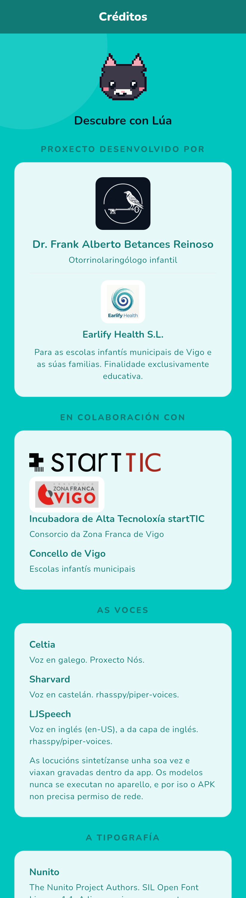
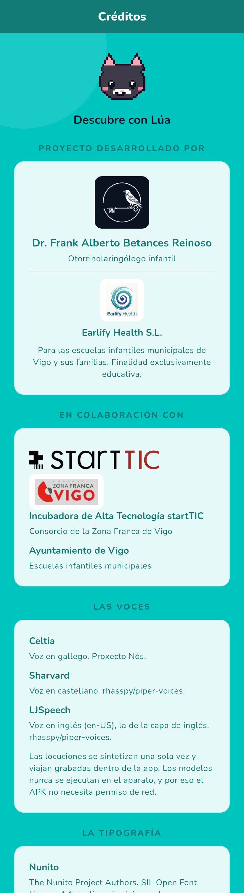

Escolas Infantís Municipais de Vigo
Descubre con Lúa
Manual de Casos de Uso
Manual de Casos de Uso
Edición Vigo · Primeiro ciclo de educación infantil (0-3)




La aplicación
Es material pedagógico para el primer ciclo de educación infantil (0-3 años), en gallego y castellano, que funciona entero sin conexión.
No es un producto sanitario
No evalúa, no diagnostica y no trata nada. No emite informes ni puntuaciones sobre ninguna criatura.
La criatura no usa la pantalla. Las dos partes de la app están escritas para la persona adulta que acompaña: la docente en la asamblea y la familia en casa. No hay juegos, ni recompensas, ni animaciones pensadas para captar la atención infantil.
| Instalación | APK de Android. No está publicada en Google Play todavía |
|---|---|
| Conexión | Ninguna. La app no puede conectarse: el paquete no lleva permiso de internet |
| Cuentas | No hay. No se pide correo, ni nombre, ni nada |
| Datos | Nada de ninguna criatura, nunca. Lo único que se guarda, en el almacenamiento privado del aparato, son los contadores de los premios de Lúa de la persona adulta: asambleas dirigidas, cápsulas leídas, racha actual y mejor racha, la fecha del último día sin hora y las insignias ganadas. No identifica a nadie y no puede salir del aparato, porque no hay permiso de red |
| Idiomas | La aplicación está en gallego y castellano, conmutables en cualquier pantalla con el selector GL / ES de la barra superior. El inglés es contenido, no un idioma de la aplicación: son las palabras y frases que la persona adulta dice en su momento, con su grabación para oírlas antes. Ninguna pantalla se traduce al inglés |
Al desinstalar no queda nada que borrar en ningún servidor, porque nunca hubo ninguno, y los contadores se van con la app.
En cada par, gallego a la izquierda y castellano a la derecha. Las dos lenguas no ocupan lo mismo, y por eso se miran las dos.
Estas imágenes no son fotos de un móvil. Son el árbol de
widgets real pintado por el motor de Flutter, con la tipografía y el contenido de la app. No
llevan muesca, ni barra de gestos, ni la densidad de un aparato concreto, y el audio no suena.
Se regeneran con flutter test --tags capturas --update-goldens
test/capturas_test.dart; sustituirlas por capturas de verdad es reemplazar los PNG de
docs/capturas/, sin tocar este manual.








La aplicación
Esta es la parte que conviene leer una vez antes de usar la app con un grupo. No explica botones —eso está en los casos de uso— sino qué pasa en esos ocho minutos y por qué van en ese orden.
La app no conduce la asamblea: la conduces tú. Cada fase se abre con una sola frase en letra grande, que es lo que tienes que hacer, y con los minutos que se le suponen. El móvil se queda fuera de la vista de las criaturas; la pantalla es tu guion, no su juguete.
| Fase | Min. | Lo que haces | Para qué |
|---|---|---|---|
| 1 · Canción a pulso | 1 | «Círculo en la alfombra. Marca el pulso en las piernas y canta muy despacio.» | Reúne al grupo y asienta el ritmo. El pulso regular es lo que sostiene después la palabra: primero el cuerpo, luego la boca |
| 2 · Cuento guiado | 2 | «Lee la página en alto, haz la pregunta y espera cinco segundos.» | Lengua en contexto, con una lámina que da de qué hablar. Los cinco segundos son la fase: a esta edad la respuesta tarda |
| 3 · Preguntas graduadas | 1 | «Una pregunta cada vez. El gesto vale igual que la palabra.» | Tres niveles —señalar, nombrar, causa-efecto— para que en el mismo círculo participe quien aún no habla y quien ya cuenta cosas |
| 4 · Exploración sensorial | 2 | «Lee el aviso antes de sacar el material. Ofrece; no pongas nada en la mano de nadie.» | La experiencia directa con el objeto del que se ha hablado. Ofrecer y no imponer es la regla: quien no quiere tocar, mira |
| 5 · Matemáticas tempranas | 1 | «Dos objetos, no cinco. Nombra mientras lo haces y deja que toquen.» | Cantidad, tamaño y forma dichas en voz alta mientras se manipulan. No se cuenta de memoria: se compara |
| 6 · Puente a casa | 1 | «Quédate con la nota para las casas: dila en la puerta o escríbela en la entrada.» | Que lo del aula llegue a casa esa misma tarde. Sin esto, la asamblea se queda en el aula |
Ocho minutos, y el reloj empieza parado
La cabecera suma los minutos de las seis fases. El reloj de cada fase no arranca solo: lo arrancas tú cuando el grupo está listo, y cambia de color si te pasas. No suena nada y no pasa nada por pasarse: es una referencia, no una alarma.
El pulso se ve, no se oye. El metrónomo es visual a propósito. Parte de las criaturas llevan audiófono o implante coclear, y un metrónomo sonoro compite justo con la voz que tienen que seguir. El pulso se dibuja y el canal auditivo queda entero para la letra.
El inglés es contenido, no un idioma de la app. Ninguna pantalla se lee en inglés. Lo que hay son dos o tres palabras y una orden de cuerpo por fase, con su grabación: pulsas, oyes cómo se dice, y luego lo dices tú. No hace falta saber inglés para usarlo; hace falta oírlo antes. Las grabaciones van despacio a propósito.
El calendario es lo que une aula y casa. Cada mes tiene un centro de interés, y de él salen la unidad que usas en la asamblea y la cápsula que la familia lee en casa. Cuando en la misma semana la docente registra la asamblea y la familia registra su juego de tres minutos, el mes queda enlazado. Esa coincidencia es el objetivo: que la criatura oiga lo mismo en los dos sitios.
Lo que la app no hace, y no es un olvido
No evalúa a nadie, no puntúa, no guarda quién hizo qué y no emite informes. Los premios de Lúa cuentan lo que hace la persona adulta —asambleas dirigidas, cápsulas leídas— y nunca el progreso de una criatura, porque ese dato no se ha medido y no se inventa.
Casos de uso
El calendario es lo que hace que aula y casa vayan por el mismo sitio la misma semana. No pide fecha de nacimiento de nadie ni guarda quién lo abrió: solo sabe en qué mes del calendario estamos.
Si el filtro no tiene unidades verás «Non se atoparon unidades para este tramo de idade». Es un aviso honesto, no un error.
La pantalla se llama Modo Asemblea · Aula e indica Fase N de 6. Se avanza con Seguinte, se retrocede con Anterior y la última fase ofrece Finalizar.
| Fase | Qué te da |
|---|---|
| 1. Canción a pulso | Metrónomo visual, letra con marcas de pulso, consigna docente y la grabación del recitado |
| 2. Cuento guiado | El cuento página a página, con la pregunta de comprensión de cada una |
| 3. Preguntas graduadas | Tres niveles: señalar, nombrar y onomatopeyas, causa-efecto |
| 4. Exploración sensorial | Objetivo, materiales, pasos y aviso de seguridad |
| 5. Matemáticas tempranas | Enfoque, vocabulario matemático y acciones manipulativas |
| 6. Puente a casa | Mensaje para el tablón y recomendación para la conversación en el hogar |
Nada que recordar, nada que guardar
Al avanzar de la fase 1 a la 2 el recitado se pausa solo; al pulsar Finalizar se detiene del todo. Después verás «Asemblea completada. A app non garda nada da sesión»: es literal, no hay registro de qué grupo hizo qué, ni aquí ni en ningún servidor.
El metrónomo no suena, y es a propósito
Parte de las criaturas llevan audiófono o implante, y un metrónomo sonoro compite justo con la voz que tienen que seguir. Por eso el pulso se dibuja y el canal auditivo queda entero para la letra.
Cómo leer los círculos:
Los tiempos del compás son los asteriscos de la letra.
En * On-das * que veñen, * on-das * que van, hay cuatro marcas:
cuatro tiempos. Lo que lees y lo que marcas son la misma cosa, por construcción.
La grabación viaja dentro de la app. No se descarga nada.
Pulsa GL o ES en la barra superior. Cambia el texto y también la grabación que se reproduce. No pierdes la fase en la que estás.
Lo que verás
«Esta gravación non está incluída nesta versión. Podes marcar o pulso coa túa voz.»
No es un fallo tuyo ni del aparato. El metrónomo visual, la letra y la consigna funcionan igual.
Casi todas las tarjetas con texto seguido llevan un botón de altavoz: la lectura del cuento y su pregunta, las preguntas con su respuesta esperada y su consejo, el aviso de seguridad y los pasos de la exploración, las matemáticas, el mensaje para las familias, y en Academy las cuatro partes de la cápsula y cada afirmación.
Suena la lengua que esté seleccionada. En gallego habla Celtia, del Proxecto Nós; en castellano, Sharvard. Las grabaciones viajan dentro de la app: los modelos de voz no se ejecutan en el aparato y no hace falta conexión.
Por qué esto importa en gallego
Quien no creció hablando gallego puede oír cómo suena la frase antes de decirla delante del grupo. Es el uso para el que existe una voz neuronal gallega en esta app.
Si una tarjeta no tiene botón, ese texto no tiene grabación. El botón no se pinta apagado a propósito: un altavoz que no suena promete algo que no cumple.
No hace falta saber inglés para usar esto: el botón existe justo para oír la pronunciación modelo antes de decirla delante del grupo. Y el vocabulario de la unidad trae la palabra en las tres lenguas, con su lámina.
En la lista de unidades, arriba, el botón «Formación: los seis pasos de la asamblea». Hay una cápsula por cada paso, en su orden: el pulso, el cuento, las preguntas, la exploración, las matemáticas y el puente con la casa. Se leen igual que las de Academy —cuatro partes y una reflexión—, con la diferencia de que la tercera dice «Qué hacer en la asamblea» y no «Qué hacer en casa».
Leerla entera suma al recorrido de premios de la docente, no al de las familias.
Premian al adulto, nunca a la criatura
Aquí no se mide el progreso de ningún niño ni de ninguna niña: la criatura no toca la pantalla, así que puntuar su «avance» sería inventarse un dato que nadie ha medido. Lo que se cuenta es el uso de la app por parte del adulto.
Hay dos recorridos separados, con su propia racha y sus propias insignias: Maestra, que avanza con asambleas dirigidas y cápsulas de formación, y Familia, que avanza con cápsulas de Academy leídas. El conmutador de arriba pasa de uno a otro.
La racha cuenta días, no sesiones: dos asambleas la misma mañana son un día. Un día en blanco la rompe, y la mejor racha se recuerda.
Casos de uso
La cápsula siempre tiene las mismas cuatro partes, en este orden:
| 1. Idea clave | La idea, en dos frases |
|---|---|
| 2. Por qué importa | Qué hay detrás |
| 3. Qué hacer en casa | Algo concreto para hoy |
| 4. Ejemplo cotidiano | La misma idea dentro de una escena real |
Si un bloque aún no tiene cápsulas, lo dice: «Novas cápsulas deste bloque en preparación pedagóxica».
En Reflexión para a familia hay afirmaciones para responder Verdadeiro o Falso.
Academy no tiene nada que un niño quiera tocar: ni sonidos llamativos, ni animaciones, ni premios. Es un texto para una persona adulta, con tipografía grande y cómoda.
Lo que se propone en casa es lo mismo que la docente dice en la asamblea ese mes. Esa coincidencia es el punto: la criatura oye la misma palabra en los dos sitios.
Cierre
Para que nadie se lleve una sorpresa en un aula:
| Límite | Detalle |
|---|---|
| Contenido | Diez unidades de aula, una por cada mes del curso, que es lo que el Calendario Escola·Fogar reparte. Academy tiene once cápsulas repartidas entre sus cinco bloques y la formación docente |
| Ilustraciones | Ochenta láminas propias, dibujadas como datos y pintadas por la app: cincuenta de vocabulario (una por palabra) y treinta escenas del cuento (una por página). No son de una persona ilustradora profesional, y se nota: son un puente honesto, no el destino |
| Grabaciones | Completas: las 1010 locuciones que el contenido declara viajan dentro del paquete, en gallego, castellano e inglés. Si alguna faltase, el botón de escuchar no se pinta |
| Vocabulario | Cinco palabras por unidad, con su lámina, su definición y su grabación en las tres lenguas. Se ven en la fase 2 de la asamblea |
| Logotipos | En los créditos falta el logotipo de la Incubadora startTIC, del Consorcio de la Zona Franca y del Concello. Los nombres sí constan. Pendiente de autorización escrita de cada entidad |
| Filtro por edad | Las diez unidades están declaradas 0-3, así que las tres pestañas enseñan lo mismo. El tramo está en el contenido, listo para el día que se separe |
| Sin aparato | Ninguna pantalla se ha visto todavía en un móvil o tablet real. Todo lo comprobado son gates, tests y capturas pintadas por el motor de Flutter, no una asamblea con el aparato en la mano |
| Google Play | No está publicada |
| Qué ves | Qué pasa |
|---|---|
| «Non se atoparon unidades…» | El filtro no tiene unidades de ese tramo. Prueba «Todas as idades» |
| «Esta gravación non está incluída…» | Esa locución no viaja en esta versión. La asamblea sigue sin ella |
| «Lámina ilustrada pendente» | El cuento aún no tiene imágenes. Lee el texto y señalad en el aula |
| «Novas cápsulas deste bloque…» | Ese bloque todavía no tiene contenido |
| Una tarjeta sin botón de escuchar | Ese texto no tiene grabación. El botón no se pinta a propósito: un altavoz que no suena engaña |
| Listas vacías sin mensaje | Eso sí sería un defecto: escríbelo al correo de contacto |
Dr. Frank Alberto Betances Reinoso
frank.alberto.betances.reinoso@gmail.com